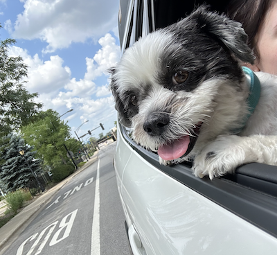

. ݁₊ ⊹ . ݁ Pets ݁ . ⊹ ₊ ݁.
I have two different speices of pets: dogs and fish. Here, I will show you all my pets and share a little bit about them!
⋆🐾⋆ Dogs ⋆🐾⋆
Sage •ﻌ•



This is my dog named Sage. He is a morkie (Maltese and Yorkie Mix), although he gets Shihz Yu a lot. His birthday is July 4th, 2017. He is my first dog, so my little baby boy. He is the cutest little boy ever. He is so sweet, and will always look at you with so much love. He loves road trips, cuddles, and being a protector of the house! The way to his heart is belly rubs and food!
Stella ૮ • ﻌ • ྀིა


This is my dog named Stella. She is the same breed as Sage, a Morkie. Her birthday is July 5th, 2020. She is my little baby girl. She loves adventures, exploring the world, and cuddles with everyone who lets her. She is extremely loving, but can be a little jealous of her big-brother Sage at times. You would also think she's a cat because she loves to climb high up on furniture and is extremely flexible (she will somehow fit into small places). The way to her heart is letting her give you a million kisses and playing with her!